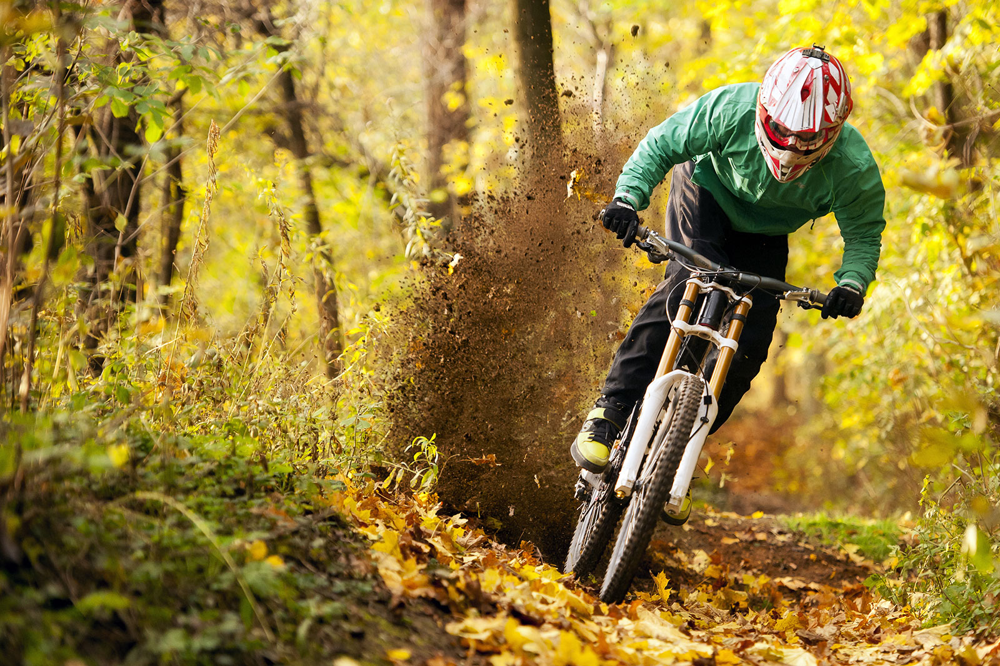

¿Qué es el ciclismo de montaña?
El término ciclismo de montaña o MTB engloba un grupo de disciplinas que, como su nombre lo dice, se llevan a cabo en la montaña. Ya sea en caminos de tierra, senderos angostos, el ciclismo de montaña se ha diversificado tanto, cada disciplina con una bicicleta especializada.
El ciclismo de montaña se podría resumir como ciclismo off-road o todo terreno.
Qué modalidades son parte del MTB
El ciclismo de montaña encierra varias formas tanto de subir la montaña como de bajarla. La mayoría de estas modalidades son a nivel competición, sin embargo no significa que no las puedes realizar sin competir.
Las principales modalidades del ciclismo de montaña son:
Cross Country (XC): Esta es la modalidad más conocida. Se rueda en senderos amplios y generalmente son circuitos donde las pistas son llanas presentando un ascenso predominante y con ciertas complicaciones en el descenso. Los circuitos pueden llevar más pedaleo de subida que de bajada. La distancia puede empezar desde los 5 km hasta los 40 km o más.
Las bicicletas que se usan en su mayoría son bicicletas con suspensión delantera y de poco recorrido en su suspensión, debido a que el ciclista necesita aprovechar la pedaleada y la ligereza de la misma. Por lo tanto muchas marcas manejan en sus modelos una versión XC. Los ciclistas llevan una protección básica resumiéndose en casco, guantes y lentes solares. Su ropa es muy ligera y transpirable.
Down Hill (DH): Es una modalidad que implica solo el descenso por la montaña o cerro.
Los que lo practican son subidos a la cumbre de la montaña o el inicio de pista por camionetas o en parques de ciclismo por góndolas.
La finalidad es descender lo más rápido posible. A través de complicaciones técnicas hechas por el humano como rampas, drops, peraltes; y por dificultades que la misma montaña tiene.
Las pistas son relativamente cortas no más de 5 km de descenso.
Las bicicletas DH son más pesadas y más robustas, y literalmente solo están hechas para esta modalidad. Son de doble suspensión y su recorrido es superior a los 180 mm. Los ciclistas llevan un equipo de protección para resistir impactos más fuertes: casco integral o completo (fullface), además de usar peto para proteger el pecho y espalda, rodilleras, goggles y coderas; Su ropa también es más robusta. Está modalidad puede ser considerada de alto riesgo o extrema por algunos.
All Mountain (AM): Digamos que esto es una mezcla de las dos modalidades anteriores. Las subidas son generalmente por pendiente marcada hasta llegar a la cima de la montaña. El descenso es por los senderos naturales que se hacen ya sea por cuestiones climáticas o por el hombre.
Estos caminos o trail presentan accidentes naturales conocidos como zona técnica como lo son raíces, piedras, escalones, entre todo lo que se considera obstáculos naturales del terreno de montaña. La distancia promedio oscila entre los 20 km hasta los 40 km.
Aunque se puede hacer All Mountain con una bici de trail o de XC (de hecho así lo hace la mayoría de la gente) existen bicicletas especiales para trail o All Mountain. Conocidas como todo terreno. Donde la combinación de diseño nos ofrece un cuadro más resistente, pero que no nos complique la pedaleada de subida y de la misma forma una geometría que nos mejore la posición para atacar de mejor manera por un descenso de caminos sinuosos y técnicos sin llegar a ser una bici pesada.
Son bicicletas de doble suspensión que van entre los 130 mm hasta los 160 mm. Por lo mismo que se usa tanto para ascender como descender, la bicicleta presenta en su mayoría un poste de asiento automático para poder ajustar fácilmente la altura del asiento y no perder el tiempo al bajarse y hacerlo manualmente.
El ciclista de All Mountain va más equipado que uno de XC pero menos que el DH. Por lo tanto los básicos son: Casco para All Mountain, rodilleras, guantes, lentes y a veces coderas; La ropa es una mezcla entre transpirable y resistente.
Evita estos errores al entrenar ciclismo de montaña
El ciclismo de montaña es una de las prácticas que requiere una preparación muy especifica. Para que podamos aprovechar al máximo lo que esta nos ofrece.
Es un deporte que se ha popularizado durante los últimos años en nuestro país. Pero antes de comenzar a entrenar debes conocer más de él y evitar muchos errores.
En esta ocasión hablaremos de 10 los errores más comunes con el fin de evitarlos y mejorar tu experiencia en el ciclismo de MTB.
1. No descansar lo suficiente para cada entrenamiento. Es importante descansar nuestro cuerpo lo suficiente. Entrenar más y descansar menos es un error. Cada cuerpo es distintos, la resistencia de una persona a otra es distinta. Dependerá de del ADN, de la edad, sexo, nivel de entrenamiento.
Alimentos e Hidratación
2. Mala hidratación. Es un error que comúnmente comenten los ciclistas. La hidratación en el ciclismo de montaña es fundamental. Especialmente en época de mucho calor, es cuando nuestro cuerpo demanda más recursos.
Debes beber aun sin tener sed, así retrasarás el proceso de deshidratación. Esto provoca una caída en el rendimiento de nuestro organismo muy rápido. Por eso es importante mantenernos hidratados.
3. No comer en el momento adecuado. En el ciclismo de montaña es relevante y fundamenta en salida largas y/o cierto volumen de entrenamiento llevar algo sólido para comer.
Recomendamos llevar algún alimento rico en glucosa para evitar una hipoglucemia. Para reponer los niveles de azúcar en sangre los mejores alimentos podrían ser: barritas de cereales, galletas, bebidas, gel energético, fruta, etc.
Rutina y Registro
4. No planificar objetivos. Debes planificar tus objetivos en el ciclismo de montaña. Es necesario para comparar meses e incluso años de entrenamiento y comprobar nuestros progresos y retrocesos.
5. Hacer siempre las mismas rutas. Es ideal variar la ruta aproximadamente cada semana. De esta manera, el entrenamiento se hará más variado y entretenido. Además, distintos caminos evitará que nuestra condición física se estanque y en beneficio tendremos una mayor progresión.
Es importante cambiar el volumen, la intensidad de esfuerzo, variar la duración de salida, salir individualmente o en grupo. También, te recomendamos hacer ejercicios de intensidad y descarga frente a otros de recuperación.
6. No realizar registro de nuestros entrenamientos. Es la mejor manera de aprender de nuestros aciertos y errores. De esta manera, se podría comparar una temporada con otra y ver el progreso en el tiempo.
Por lo tanto, en este registro podrás crear estadísticas en las sesiones y análisis ciertos errores muy fácil de identificar con un registro correctamente llevado.